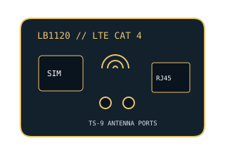

[ MODEL-SPECIFIC NETWORK HARDWARE ]
NETGEAR LB1120 LTE Cat 4 Modem
North American LTE data modem with micro-SIM, Gigabit Ethernet handoff and optional TS-9 antenna connections; this SKU is not a Wi-Fi router.

EXACT MODEL / SKU: NETGEAR LB1120-100NAS. Carrier bands and certification differ by region and SKU; do not treat this as an unlocked global radio.
Exact specifications and compatibility
| Modem standard | 4G LTE Category 4; 3G DC-HSPA+ fallback is available on supported North American bands. Radio features vary by carrier and service. |
|---|---|
| Interfaces | Micro-SIM slot; 1 × Gigabit Ethernet RJ-45; two TS-9 external antenna connectors. No Wi-Fi access point. |
| Downstream / upstream | LTE Cat 4 peak specification up to 150Mb/s down and 50Mb/s up. User rate depends on supported LTE band, carrier aggregation/network configuration, signal, congestion and data plan. |
| Telephone service | Cellular data modem only; no voice handset port, VoLTE or analog telephone service is specified for the LB1120. |
| Provider compatibility | North American LB1120-100NAS radio bands are LTE B2/B4/B5/B12/B17/B29/B30 and UMTS B2/B5 in applicable revisions. A carrier must accept the modem/IMEI, support its bands and activate a compatible data SIM/plan; verify exact carrier approval. |
| Firmware / host compatibility | NETGEAR support provides model resources; mobile network provisioning and SIM/APN settings are carrier-dependent. Wired Ethernet uses ordinary TCP/IP without a PC cellular driver. Firmware must match regional SKU/carrier requirements. |
| Power and safety | 12V DC, 1A supplied power adapter. Use a correctly rated NETGEAR adapter, keep the indoor modem ventilated and dry, and position external antennas away from damage or pinching. |
Model-specific notes
Do not infer voice, SMS or hotspot features from a data SIM. The 150/50Mb/s Cat 4 figures are peak radio rates, not committed carrier throughput.
Manufacturer specifications and manual
- NETGEAR LB1120 official product specificationsManufacturer specification source for product functions and intended mobile data use.
- NETGEAR LB1120 official data sheetManufacturer-hosted technical specification for rates, interfaces, bands and power.
- NETGEAR LB1120/LB1121 User ManualManufacturer-hosted installation, SIM, safety and troubleshooting manual.